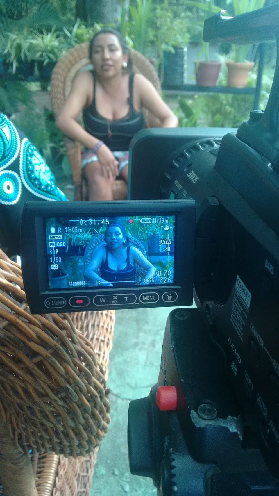

AMAZON FISHERIES
Format: Documentary, 11 min 18 s
Year: 2019
Role: Assistant Camera, Assistant Producer and Editor
Partners: International Collective in Support of Fishworkers (ICSF); Operação Amazônia Nativa (OPAN); Coletivo Memórias do Mar. Produced by Arica Cinematográfica. Directed by Enio Staub
Logline
Indigenous Fishing in the Amazon and the Voluntary Guidelines for Securing Sustainable Small-Scale Fisheries: how Indigenous peoples of the Amazon manage artisanal fisheries sustainably.
About the project
The film was shot in Manaus, Amazonas, produced by Arica Cinematográfica and directed by its owner, Enio Staub, for ICSF and OPAN, with support from Coletivo Memórias do Mar. I worked as assistant camera, assistant producer and editor. I built the 11-minute film from the interview material, working collaboratively with the producers and anthropologists, and mapped the content as a diagram in diagrams.net to plan the structure.
There was no workshop on this film, but we introduced the participants to filming informally.
